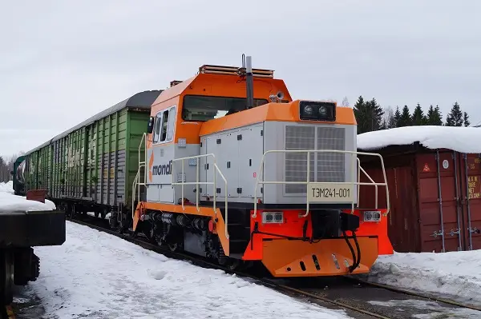
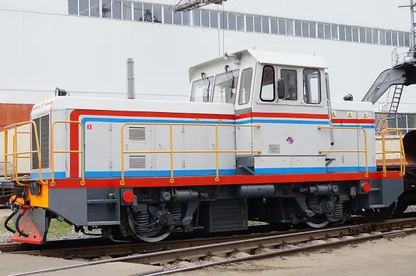
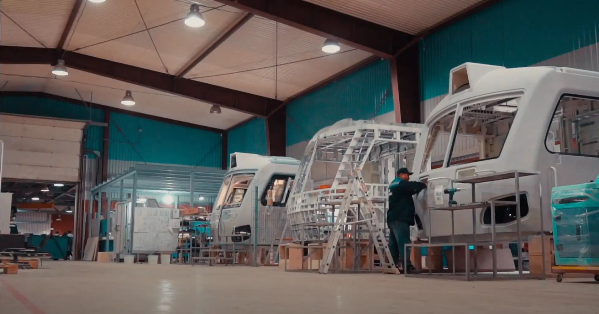
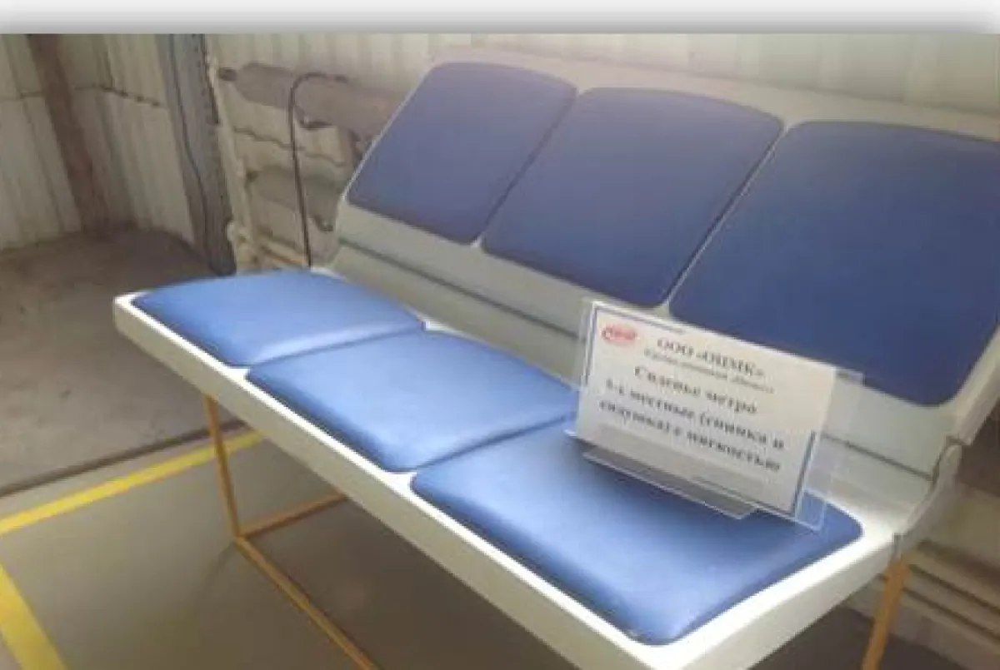
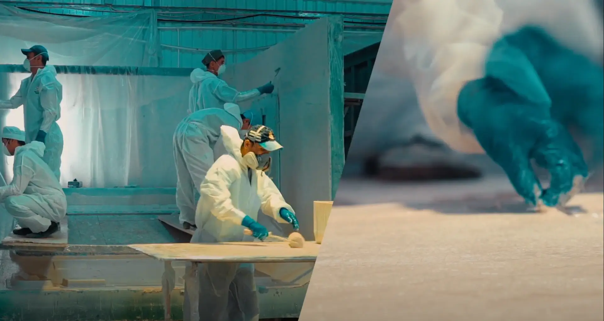
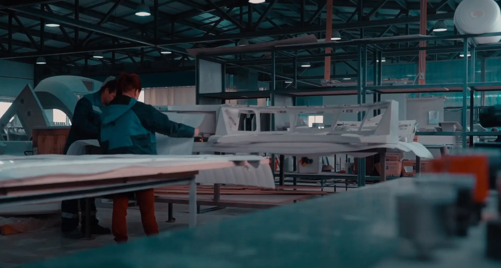

Главная / Проекты
От отдельной детали до локомотива целиком. Ниже — работы, о которых можно рассказать публично.
Двухосный локомотив с комбинированной силовой установкой ЛГМ1. Уже работает на внутренних путях самых разных компаний: на промышленных и ремонтных предприятиях, предприятиях путевого хозяйства и железнодорожных станциях. Подходит и для закрытых помещений.

ТЭМ-241 создавался как максимально универсальный и при этом экономичный локомотив. Экономичность обеспечивает гибридная силовая установка из дизель-генератора и тяговых аккумуляторных батарей: затраты на дизельное топливо снижаются до 40 %. Большая часть маневровой работы идёт на батареях, что снижает и налог за выброс вредных веществ.
Локомотив выполнен в габарите 0-ВМ по ГОСТ 9238, на короткобазной двухосной экипажной части с высокорасположенной кабиной капотного типа. Может оснащаться навесным оборудованием либо использоваться для питания электроинструмента суммарной мощностью до 50 кВт.
Трёхосный маневровый тепловоз для промышленных предприятий, построенный в 2022 году. Предназначен для маневровых и хозяйственных работ на путях необщего пользования.

Модуль базируется на унифицированной бесчелюстной тележке. Надёжная и хорошо знакомая конструкция позволяет быстро обслуживать экипажную часть, а при необходимости тележку можно выкатить. Переход на три оси увеличил сцепной вес и поднял силу тяги до 18 тс.
В качестве силовой установки применена дизель-электростанция на базе двигателя Scania номинальной мощностью 250 кВт. Может устанавливаться и комбинированная установка — дизель-электростанция плюс тяговая батарея — суммарной мощностью до 300 кВт; она снижает затраты на топливо на 20–40 % и позволяет работать в закрытых помещениях без шума и выхлопа.
В 2019 году введён в строй отдельный цех сборки крупногабаритных изделий из композиционных материалов площадью 1500 квадратных метров. Основная продукция — кабины, обтекатели, маски, интерьеры и пульты управления для подвижного рельсового состава, для отечественных и зарубежных предприятий.

Сиденья для подвижного состава и общественных пространств: композитный корпус, мягкие вставки, окраска в цвет заказчика. Форма держится десятилетиями, поверхность не боится влаги и чистящих средств.

Новое направление: отдельный производственный участок для беспилотных летательных аппаратов из углепластика — от лазерного раскроя материала до испытаний готового изделия.


Работаем и с единичными изделиями, и с серией. Расскажите, что нужно сделать.